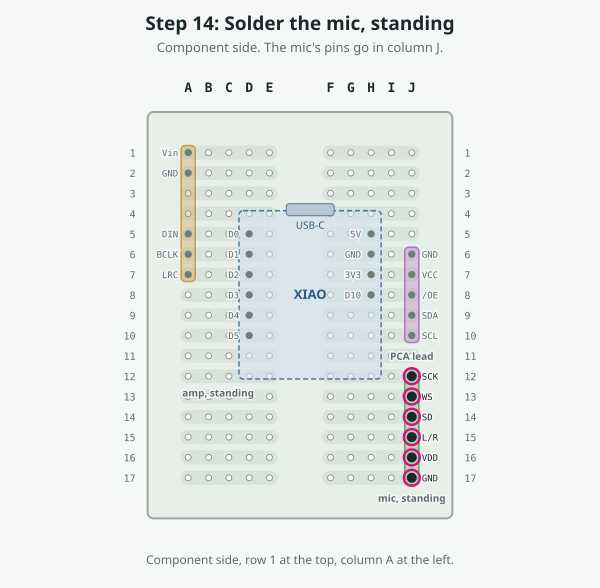
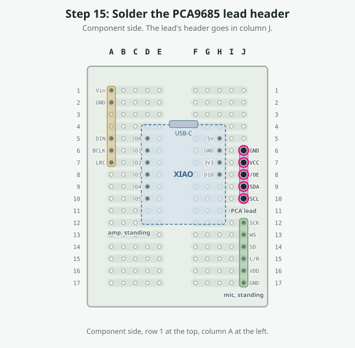
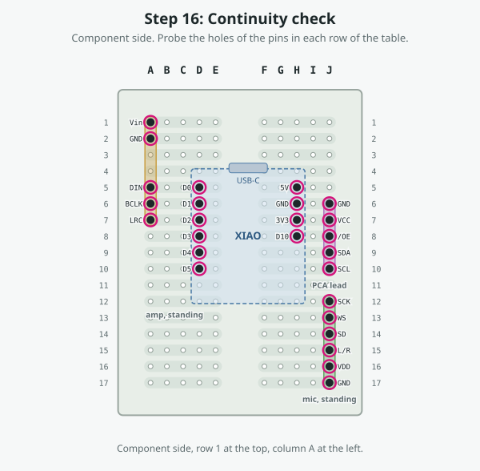

Step 1 of 17
Prepare the modules

Do this
- Fit header pins only where the hole map shows a dot, and pull the others out with pliers. Each strip that has no pin in it stays free for links.
- XIAO: left row D0–D5, right row 5V, GND, 3V3, D10. Leave D6, D7, D8 and D9 out. Fit the pins to the module with the perfboard as the jig, so they come out square, and solder them to the module only.
- MAX98357A amp: a 7-pin header on its pin edge, keeping Vin, GND, DIN, BCLK and LRC. Pull SD and GAIN. Assumed pin order Vin, GND, SD, GAIN, DIN, BCLK, LRC: check your board's labels.
- INMP441 mic: a 6-pin header, all six kept. Assumed pin order SCK, WS, SD, L/R, VDD, GND: check your board's labels. If yours differs, keep the same nets and move the pins and links to suit.
- PCA9685 lead: a 5-pin header in the order GND, VCC, /OE, SDA, SCL.
- PCA9685 /OE: swap the breakout's pull-down for a pull-up as in the wiring guide, stage 1.
Details
| Board | ElectroCookie mini solderable breadboard, 38.1 × 50.8 mm, 17 rows |
|---|---|
| Check | Hold each header over the hole map: every fitted pin lands on a dotted hole. |
Check
- Nothing is soldered to the carrier yet.
Step 2 of 17
L3, black, E15 → E17

Do this
- Turn the board over (underside up).
- Start at hole printed E15 (top F15): push the tinned end in and solder it.
- Lay the wire flat along the drawn path; pinch the corners and hold them with Kapton tape.
- End at hole printed E17 (top F17): push it in and solder it.
- Check, as below.
Details
| Wire | L3, black, 30 AWG stranded |
|---|---|
| Cut | 20 mm, estimated from the drawn route: trim to fit |
| From → to | F15 → F17 (printed E15 → E17 on the underside) |
| Side | underside (link) |
| What it does | Ties the mic's L/R pin to its GND pin, so it drives the left slot. |
Check
- F15 connects to F17. Both strips will join INMP441.L/R, INMP441.GND.
- It must not connect to: INMP441.SD (strip 14R), INMP441.VDD (strip 16R)
Step 3 of 17
L1, violet, F9 → E9

Do this
- Turn the board over (underside up).
- Start at hole printed F9 (top E9): push the tinned end in and solder it.
- Lay the wire flat along the drawn path; pinch the corners and hold them with Kapton tape.
- End at hole printed E9 (top F9): push it in and solder it.
- Check, as below.
Details
| Wire | L1, violet, 30 AWG stranded |
|---|---|
| Cut | 20 mm, estimated from the drawn route: trim to fit |
| From → to | E9 → F9 (printed F9 → E9 on the underside) |
| Side | underside (link) |
| What it does | SDA: D4's strip to the lead's SDA pin. |
Check
- E9 connects to F9. Both strips will join XIAO.D4, PCA9685.SDA.
- It must not connect to: XIAO.D3 (strip 8L), XIAO.D5 (strip 10L), PCA9685./OE (strip 8R), XIAO.D10 (strip 8R), PCA9685.SCL (strip 10R)
Step 4 of 17
L2, grey, F10 → E10

Do this
- Turn the board over (underside up).
- Start at hole printed F10 (top E10): push the tinned end in and solder it.
- Lay the wire flat along the drawn path; pinch the corners and hold them with Kapton tape.
- End at hole printed E10 (top F10): push it in and solder it.
- Check, as below.
Details
| Wire | L2, grey, 30 AWG stranded |
|---|---|
| Cut | 20 mm, estimated from the drawn route: trim to fit |
| From → to | E10 → F10 (printed F10 → E10 on the underside) |
| Side | underside (link) |
| What it does | SCL: D5's strip to the lead's SCL pin. |
Check
- E10 connects to F10. Both strips will join XIAO.D5, PCA9685.SCL.
- It must not connect to: XIAO.D4 (strip 9L), PCA9685.SDA (strip 9R)
Step 5 of 17
L4, red, F1 → E5

Do this
- Turn the board over (underside up).
- Start at hole printed F1 (top E1): push the tinned end in and solder it.
- Lay the wire flat along the drawn path; pinch the corners and hold them with Kapton tape.
- End at hole printed E5 (top F5): push it in and solder it.
- Check, as below.
Details
| Wire | L4, red, 30 AWG stranded |
|---|---|
| Cut | 30 mm, estimated from the drawn route: trim to fit |
| From → to | E1 → F5 (printed F1 → E5 on the underside) |
| Side | underside (link) |
| What it does | +5 V from the XIAO's 5V strip to the amp's Vin. |
Check
- E1 connects to F5. Both strips will join MAX98357A.Vin, XIAO.5V.
- It must not connect to: MAX98357A.GND (strip 2L), PCA9685.GND (strip 6R), XIAO.GND (strip 6R)
Step 6 of 17
L5, black, F2 → E6

Do this
- Turn the board over (underside up).
- Start at hole printed F2 (top E2): push the tinned end in and solder it.
- Lay the wire flat along the drawn path; pinch the corners and hold them with Kapton tape.
- End at hole printed E6 (top F6): push it in and solder it.
- Check, as below.
Details
| Wire | L5, black, 30 AWG stranded |
|---|---|
| Cut | 30 mm, estimated from the drawn route: trim to fit |
| From → to | E2 → F6 (printed F2 → E6 on the underside) |
| Side | underside (link) |
| What it does | Ground from the XIAO's GND strip to the amp's GND. |
Check
- E2 connects to F6. Both strips will join MAX98357A.GND, PCA9685.GND, XIAO.GND.
- It must not connect to: MAX98357A.Vin (strip 1L), XIAO.5V (strip 5R), PCA9685.VCC (strip 7R), XIAO.3V3 (strip 7R)
Step 7 of 17
L9, green, F7 → E13

Do this
- Turn the board over (underside up).
- Start at hole printed F7 (top E7): push the tinned end in and solder it.
- Lay the wire flat along the drawn path; pinch the corners and hold them with Kapton tape.
- End at hole printed E13 (top F13): push it in and solder it.
- Check, as below.
Details
| Wire | L9, green, 30 AWG stranded |
|---|---|
| Cut | 35 mm, estimated from the drawn route: trim to fit |
| From → to | E7 → F13 (printed F7 → E13 on the underside) |
| Side | underside (link) |
| What it does | I2S word select: D2's strip (the amp's LRC) to the mic's WS. |
Check
- E7 connects to F13. Both strips will join MAX98357A.LRC, XIAO.D2, INMP441.WS.
- It must not connect to: MAX98357A.BCLK (strip 6L), XIAO.D1 (strip 6L), XIAO.D3 (strip 8L), INMP441.SCK (strip 12R), INMP441.SD (strip 14R)
Step 8 of 17
L10, blue, F8 → E14

Do this
- Turn the board over (underside up).
- Start at hole printed F8 (top E8): push the tinned end in and solder it.
- Lay the wire flat along the drawn path; pinch the corners and hold them with Kapton tape.
- End at hole printed E14 (top F14): push it in and solder it.
- Check, as below.
Details
| Wire | L10, blue, 30 AWG stranded |
|---|---|
| Cut | 35 mm, estimated from the drawn route: trim to fit |
| From → to | E8 → F14 (printed F8 → E14 on the underside) |
| Side | underside (link) |
| What it does | Mic data: D3's strip to the mic's SD. |
Check
- E8 connects to F14. Both strips will join XIAO.D3, INMP441.SD.
- It must not connect to: MAX98357A.LRC (strip 7L), XIAO.D2 (strip 7L), XIAO.D4 (strip 9L), INMP441.WS (strip 13R), INMP441.L/R (strip 15R)
Step 9 of 17
L8, yellow, F6 → E12

Do this
- Turn the board over (underside up).
- Start at hole printed F6 (top E6): push the tinned end in and solder it.
- Lay the wire flat along the drawn path; pinch the corners and hold them with Kapton tape.
- End at hole printed E12 (top F12): push it in and solder it.
- Check, as below.
Details
| Wire | L8, yellow, 30 AWG stranded |
|---|---|
| Cut | 35 mm, estimated from the drawn route: trim to fit |
| From → to | E6 → F12 (printed F6 → E12 on the underside) |
| Side | underside (link) |
| What it does | I2S bit clock: D1's strip (the amp's BCLK) to the mic's SCK. |
Check
- E6 connects to F12. Both strips will join MAX98357A.BCLK, XIAO.D1, INMP441.SCK.
- It must not connect to: MAX98357A.DIN (strip 5L), XIAO.D0 (strip 5L), MAX98357A.LRC (strip 7L), XIAO.D2 (strip 7L), INMP441.WS (strip 13R)
Step 10 of 17
L6, orange, E16 → D7

Do this
- Turn the board over (underside up).
- Start at hole printed E16 (top F16): push the tinned end in and solder it.
- Lay the wire flat along the drawn path; pinch the corners and hold them with Kapton tape.
- End at hole printed D7 (top G7): push it in and solder it.
- Check, as below.
Details
| Wire | L6, orange, 30 AWG stranded |
|---|---|
| Cut | 40 mm, estimated from the drawn route: trim to fit |
| From → to | F16 → G7 (printed E16 → D7 on the underside) |
| Side | underside (link) |
| What it does | 3.3 V from the XIAO's 3V3 strip to the mic's VDD. |
Check
- F16 connects to G7. Both strips will join INMP441.VDD, PCA9685.VCC, XIAO.3V3.
- It must not connect to: INMP441.L/R (strip 15R), INMP441.GND (strip 17R), PCA9685.GND (strip 6R), XIAO.GND (strip 6R), PCA9685./OE (strip 8R), XIAO.D10 (strip 8R)
Step 11 of 17
L7, black, D17 → D6

Do this
- Turn the board over (underside up).
- Start at hole printed D17 (top G17): push the tinned end in and solder it.
- Lay the wire flat along the drawn path; pinch the corners and hold them with Kapton tape.
- End at hole printed D6 (top G6): push it in and solder it.
- Check, as below.
Details
| Wire | L7, black, 30 AWG stranded |
|---|---|
| Cut | 45 mm, estimated from the drawn route: trim to fit |
| From → to | G17 → G6 (printed D17 → D6 on the underside) |
| Side | underside (link) |
| What it does | Ground from the XIAO's GND strip to the mic's GND. |
Check
- G17 connects to G6. Both strips will join INMP441.GND, PCA9685.GND, XIAO.GND.
- It must not connect to: INMP441.VDD (strip 16R), XIAO.5V (strip 5R), PCA9685.VCC (strip 7R), XIAO.3V3 (strip 7R)
Step 12 of 17
Solder the XIAO

Do this
- Component side up, USB-C toward row 1 (the top edge). Left pin row in column D (D0 at D5 … D5 at D10), right row in column H (5V at H5, GND, 3V3, D10 at H8).
- Solder each pin from the underside. Check the pins you pulled (D6–D9) are not in the board.
- S3 Sense: the camera board stacks on top of the XIAO, so allow height above it.
Details
| Pins | D0 D5, D1 D6, D2 D7, D3 D8, D4 D9, D5 D10, 5V H5, GND H6, 3V3 H7, D10 H8 |
|---|
Check
- Each XIAO pin hole reads the same net as its link end (see the continuity check below).
Step 13 of 17
Solder the amp, standing

Do this
- Stand the MAX98357A on its header in column A, rows 1–7, its board edge-on to the board and the pin edge down. Vin at A1, GND at A2, DIN at A5, BCLK at A6, LRC at A7. SD and GAIN (A3, A4) have no pin.
- Solder from the underside. The speaker's two wires go to the amp's own terminal later.
Details
| Pins | Vin A1, GND A2, DIN A5, BCLK A6, LRC A7 |
|---|---|
| Assumed | the amp's pin order; check your board |
Check
- A5, A6 and A7 are already joined to D0, D1 and D2 by their strips.
Step 14 of 17
Solder the mic, standing

Do this
- Stand the INMP441 on its header in column J, rows 12–17: SCK J12, WS J13, SD J14, L/R J15, VDD J16, GND J17. Its sound port should face where the mechanism will have an opening; that is not designed yet.
- Solder from the underside.
Details
| Pins | SCK J12, WS J13, SD J14, L/R J15, VDD J16, GND J17 |
|---|---|
| Assumed | the mic's pin order; check your board |
Check
- Mic placement is flagged open: its position depends on the mechanical design.
Step 15 of 17
Solder the PCA9685 lead header

Do this
- Stand the 5-pin header in column J, rows 6–10, in the order GND (J6), VCC (J7), /OE (J8), SDA (J9), SCL (J10).
- Solder from the underside. GND, VCC and /OE already sit in the strips of the XIAO's GND, 3V3 and D10; SDA and SCL were joined by L1 and L2.
Details
| Pins | GND J6, VCC J7, /OE J8, SDA J9, SCL J10 |
|---|
Check
- J6 reads as ground, J7 as 3.3 V, J8 as D10.
Step 16 of 17
Continuity check

Do this
- Meter on continuity: connected beeps. Probe from the component side.
Nets that must connect
| Net | Holes |
|---|---|
| +3V3 | H7 (XIAO.3V3), J7 (PCA lead.VCC), J16 (mic.VDD) |
| +5V | A1 (amp.Vin), H5 (XIAO.5V) |
| GND | A2 (amp.GND), H6 (XIAO.GND), J6 (PCA lead.GND), J15 (mic.L/R), J17 (mic.GND) |
| D0 | A5 (amp.DIN), D5 (XIAO.D0) |
| D1 | A6 (amp.BCLK), D6 (XIAO.D1), J12 (mic.SCK) |
| D2 | A7 (amp.LRC), D7 (XIAO.D2), J13 (mic.WS) |
| D3 | D8 (XIAO.D3), J14 (mic.SD) |
| D4 | D9 (XIAO.D4), J9 (PCA lead.SDA) |
| D5 | D10 (XIAO.D5), J10 (PCA lead.SCL) |
| D10 | H8 (XIAO.D10), J8 (PCA lead./OE) |
Then check that +3V3, +5V and GND are not connected to each other or to any other net, and D1 is not connected to D2.
Step 17 of 17
Leads off the board
Do this
- Make the PCA9685 lead: a 5-wire lead with a female 5-pin connector at the carrier end and the breakout's pin spacing at the other: GND, VCC, /OE, SDA, SCL in the carrier's order.
- Speaker: its two wires to the amp's own screw terminal (+ and −).
- Servo power stays off the carrier: the supply's + goes through the switch to the PCA9685's V+ terminal, and its − to the PCA9685's GND terminal, as in stage 8 of the wiring guide.
- Leave the switch off and every servo unplugged.
The lead
| Pin | Hole · goes to · colour |
|---|---|
| GND | J6 · PCA9685 GND · black |
| VCC | J7 · PCA9685 VCC · orange |
| /OE | J8 · PCA9685 /OE · brown |
| SDA | J9 · PCA9685 SDA · violet |
| SCL | J10 · PCA9685 SCL · grey |
Check
- Then run the bench checks on the Check page.